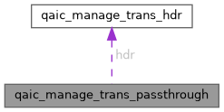

|
XenevaOS
|
#include <qaic_accel.h>

Public Attributes | |
| struct qaic_manage_trans_hdr | hdr |
| __u8 | data [] |
struct qaic_manage_trans_passthrough - Defines a passthrough transaction. @hdr: In. Header to identify this transaction. @data: In. Payload of this transaction. Opaque to the driver. Userspace must encode in little endian and align/pad to 64-bit.
| __u8 qaic_manage_trans_passthrough::data[] |
| struct qaic_manage_trans_hdr qaic_manage_trans_passthrough::hdr |